上述定理不会让你感到吃惊，它们的证明过程也非常直接。只在证明某些不太直观的定理时，我们才可以体会到其中的乐趣。到目前为止，我们接触的都是整数，现在可以进阶到分数的相关定理的证明了。“有理数”（rational number）是指可以表示为分数形式的数字。更准确的说法是，如果r = a / b，其中a和b是整数（且b ≠ 0），那么我们说r是有理数。不能表示为分数形式的数字叫作“无理数”（irrational number）。（你或许听说过，数字π= 3.141 59…就是无理数，我们将在本书第8章对它进行详细介绍。）
在介绍下一个定理之前，我们有必要回顾一下分数的加法。如果分数的分母相同，进行加法运算时就极为简单。例如：
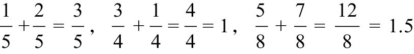
否则，我们必须先把它们化成分母相同的形式，再进行加法运算。例如：
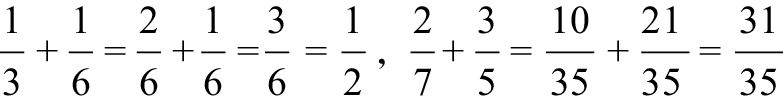
一般而言，在计算两个分数 a / b和c / d的和时，我们可以为它们赋予一个公分母，例如：
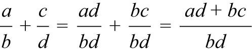
接下来，我们就可以证明有理数的一些简单属性了。
定理：两个有理数的平均数仍然是有理数。
证明：令x和y为有理数，必然存在a、b、c、d，满足x = a / b，y = c / d。所以，x和y的平均数为：
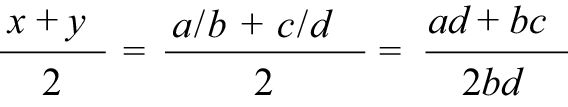
由此可见，该平均数是一个分数，且分子、分母均为整数。因此，有理数x和y的平均数也是有理数。
我们想一想，这个定理有什么含义？它的意思是，对于任意两个有理数，即使它们非常接近，我们也总能找出一个位于它们之间的有理数。也许你忍不住会想，所有的数字都是有理数（古希腊人也曾有这样的想法）。但是，令人吃惊的是，这个想法是错误的。我们以
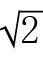
为例，这个数字的小数形式是1.414 2…。现在，我们有很多方法，用分数来近似地表示。例如，近似等于10 / 7或者1 414 /1 000，但是这些分数的平方都不会正好等于2。是不是因为我们找得还不够仔细呢？下面这个定理告诉我们，无论我们怎么努力，都会无功而返。该定理的证明采用了反证法，关于无理数的定理通常都会采用这种证明方法。我们知道，所有分数都可化简至最简分数，即分子和分母没有大于1的公因数。下面的证明过程就将利用分数的这个特点。定理：是无理数。
证明：我们假设是有理数，则必然存在正整数a和b，满足：
= a / b
其中，a / b是最简分数。等式两边同时进行平方运算，就有：
2 = a2 / b2
也就是说，a2 = 2b2。由此可知，a2必然是偶数。如果a2是偶数，那么a也必然是偶数（前文中已经证明，如果a是奇数，那么其自乘的结果也必然是奇数）。因此，a = 2k，k是整数。将它代入上面的等式，就有：
(2k)2 = 2b2
4k2 = 2b2
b2 = 2k2
因此，b2是偶数。既然b2是偶数，b也必然是偶数。但是，a和b都是偶数，这与a / b是最简分数的前提相矛盾。因此，是有理数这个假设不成立，这证明是无理数。
单凭逻辑的力量，就证明了一个非常令人吃惊的结果，所以我十分喜欢这个证明过程（画了个笑脸）。本书第12章将告诉我们，无理数非常多。事实上，从严格意义上讲，绝大多数的实数都是无理数，尽管我们在日常生活中接触的大多是有理数。
上面这条定理有一个有趣的“推论”（corollary），推论是指由某条定理推导得出的定理。这个推论的推导过程利用了“指数定律”（law of exponentiation），即对于任意整数a、b、c：
（ab）c = abc
例如，（53）2 = 56，这是有道理的，因为：
（53）2 = (5 × 5 × 5) × (5 × 5 × 5) = 56
推论：存在无理数a和b，使得ab是有理数。
尽管现在我们只知道一个无理数，即，但足以证明这条定理，这真是太棒了！下面的证明过程可以告诉你符合条件的a和b是存在的，但不能告诉你它们的值分别是多少。我们把这种证明称为“存在性证明”（existence proof）。
证明：我们知道是无理数，我们来看 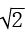
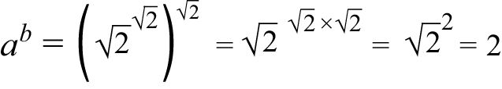
答案是一个有理数。因此，无论是有理数还是无理数，我们都可以找到a、b，使得ab是有理数。
存在性证明这种证明方法通常很巧妙，但它有时也存在不尽如人意的地方，无法告诉你想要了解的所有信息。（如果你感到好奇，我可以告诉你是无理数，但这不属于本章讨论的范围。）
更能让人心满意足的证明方法是“构造性证明”（constructive proof），因为它告诉你的信息正好是你想要了解的信息。例如，我们可以证明所有的有理数a / b都是有尽或者循环小数（这是因为，随着除法运算的进行，b除过的数字必然会再次出现，并被b除）。但是，它的反命题是否正确？有尽小数必然是有理数，例如，0.123 58 =12 358 / 100 000。循环小数呢？例如，0.123 123 123…一定是有理数吗？答案是肯定的。下面这种巧妙的方法可以告诉我们有理数到底是什么。我们把这个神秘数字设为w，于是：
w = 0.123 123 123…
两边同时乘以1 000，上式就会变成：
1 000w = 123.123 123 123…
用第二个等式减去第一个等式，就会得到：
999w = 123
w =
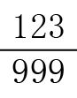
=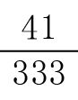
我们换另一个循环小数再试一试。这一次的循环小数并不是从小数点后第一位就开始循环，比如，如何将小数0.833 33…表示成分数形式呢？先令：
x = 0.833 33…
两边同时乘以100：
100x = 83.333 3…
再同时除以10：
10x = 8.333 3…
从100x中减去10x，小数点后面的所有项都抵消了：
90x = (83.333 3…) – (8.333 3…) = 75
x =
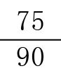
=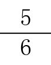
运用构造性证明这种证明方法，我们可以证明当且仅当某个数字的小数形式是有尽或者循环小数时，该数才是有理数。如果某数的小数形式是不循环的无尽小数，例如：
v = 0.123 456 789 101 112 131 415…
这个数字就是无理数。